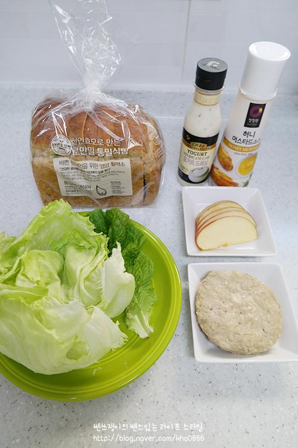
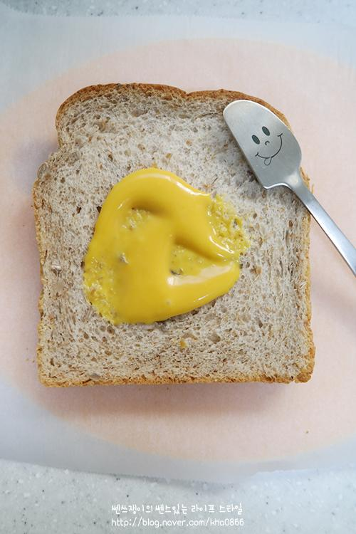
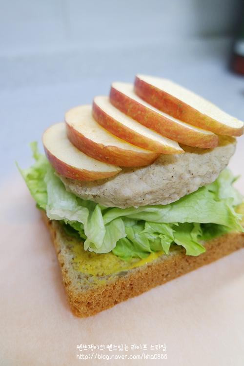
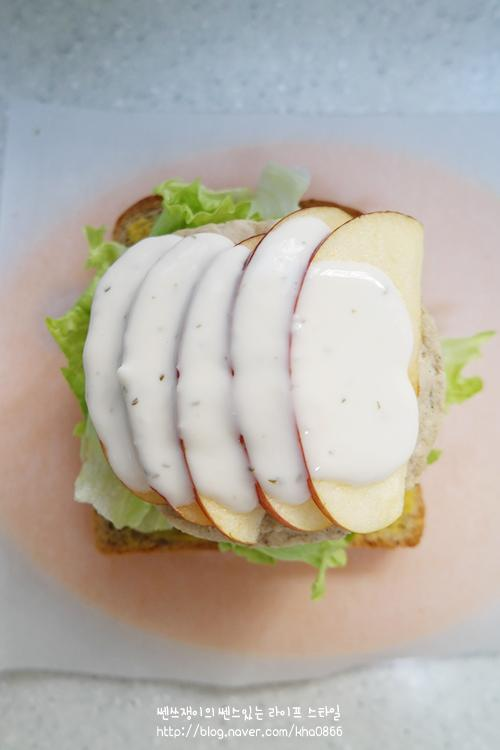
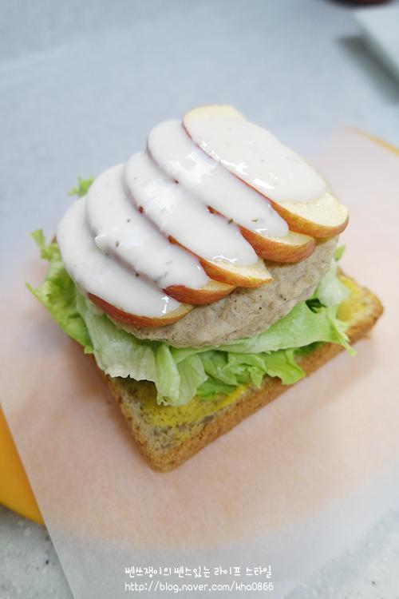
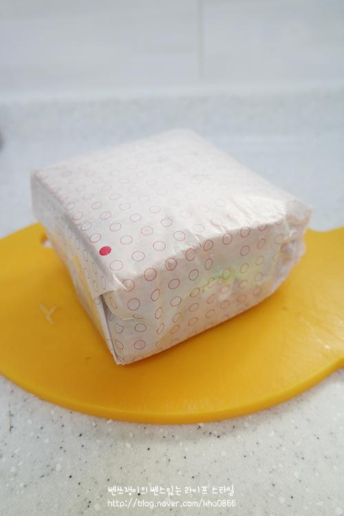
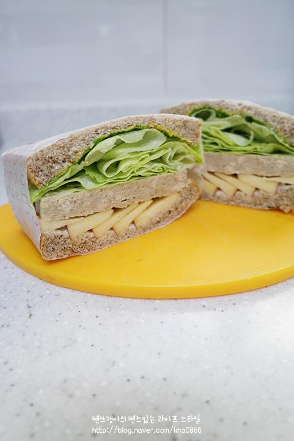

RECIPE TIP
저는 요거트 드레싱을 사용하였는데,
좋아하는 드레싱으로 준비하셔도 좋아요~

STEP.1
통밀식빵, 사과4분의1쪽, 닭가슴살패티,
양상추 요거트드레싱, 허니머스터드 준비해주세요^^

STEP.2
밀가루빵보다 칼로리가 가벼운 통밀곡물식빵한쪽면에
허니머스터드 펴발라주세요

TEP.3
그리고 위에 양상추 패티 사과순서로 차곡히 올려주시고~

STEP.4
요거트 드레싱 듬~~~ 뿍 ~~~

STEP.5
저는 제가 좋아하는 요거트드레싱을 뿌렸지만 좀더 칼로리가
낮은 드레싱을 드시는분들은 그걸 사용하시면되요^^
요거트와 사과가 잘 어울려 저는 요거트 드레싱이 좋더라구요,

STEP.6
유산지로 잘 감싸주고

STEP.7
반 잘라주세요~ 색 때문인지 먹음직 스러워
보이진않고 건강한 맛같이 보이지만 사실은 넘나 맛있답니다.